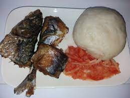

Banku

Description
Banku with hot pepper and fried fish
Ingredients
- corn dough
- Oil
- Cassava dough
- Fresh Fish
- Pepper, Tomatoes & onions
Steps
- Mix cassava and corm dough
- Put on fire and stir until it becomes difficult to stir
- Turn it over continuously until it sticks together
- Fry fish with oil
- Grind pepper, tomatoes and onions together
- Mould Banku in round shape and serve with pepper and fish